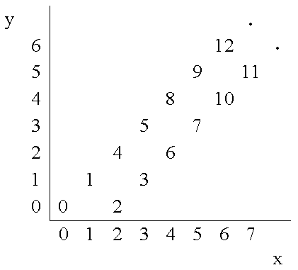

Starting from point (0,0) on a plane, we have written all non-negative integers 0, 1, 2,... as shown in the figure. For example, 1, 2, and 3 has been written at points (1,1), (2,0), and (3, 1) respectively and this pattern has continued.

You are to write a program that reads the coordinates of a point (x, y), and writes the number (if any) that has been written at that point. (x, y) coordinates in the input are in the range 0...10000.
Input
The first line of the input is N, the number of test cases for this problem. In each of the N following lines, there is x, and y representing the coordinates (x, y) of a point.
Output
For each point in the input, write the number written at that point or write No Number if there is none.
Example
Input:
3
4 2
6 6
3 4
Output:
6
12
No Number
#include <iostream>
using namespace std;
int main() {
int T;
cin >> T;
for(;T--;) {
int x, y;
cin >> x >> y;
if (x == y || x - y == 2) {
if (x&1) {
cout << x + y - 1 << "\n";
} else {
cout << x + y << "\n";
}
} else {
cout << "No Number\n";
}
}
return 0;
}